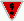

| Chapter 6. Strings | ||
|---|---|---|
 |  | |
| Chapter 6. Strings | ||
|---|---|---|
| | | |
Table of Contents
So far we have seen a lot about strings. Before giving a summary about this data type, let us explain the object syntax feature.
We have seen that strings have a value. But Python values are more than that. They are objects.
|  | Object |
|
Objects are things that know more than their values. In particular, you can ask them to perform specialized tasks that only them can perform. | |
Up to now we have used some special functions handling string data available to us by the up to now magic statement from string import *. But strings themselves know how to execute all of them and even more. Look at this:
>>> motif = "gaattc"
>>> motif.upper()
'GAATTC'
>>> motif
'gaattc'
>>> motif.isalpha()
1
>>> motif.count('n')
0
>>> motif = 'GAATTC_'
>>> motif + motif
'GAATTC_GAATTC_'
>>> motif * 3
'GAATTC_GAATTC_GAATTC_'
At the first glance this looks a little bit strange, but you can
read the . (dot) operator as:
“ask
object motif to
do something” as: transform
motif in an uppercase string
(upper), ask whether it contains only letters
(isalpha) or count the number of
“n” characters.
Objects as namespaces. How does it work? All objects have their own namespace containing all variable and function names that are defined for that object. As already describeb in Section 2.4 you can see all names defined for an object by using the dir function:
>>> dir(motif)
['__add__', '__class__', '__contains__', '__delattr__', '__eq__', '__ge__',
'__getattribute__', '__getitem__', '__getslice__', '__gt__', '__hash__',
'__init__', '__le__', '__len__', '__lt__', '__mul__', '__ne__', '__new__',
'__reduce__', '__repr__', '__rmul__', '__setattr__', '__str__', 'capitalize',
'center', 'count', 'decode', 'encode', 'endswith', 'expandtabs', 'find',
'index', 'isalnum', 'isalpha', 'isdigit', 'islower', 'isspace', 'istitle',
'isupper', 'join', 'ljust', 'lower', 'lstrip', 'replace', 'rfind', 'rindex',
'rjust', 'rstrip', 'split', 'splitlines', 'startswith', 'strip', 'swapcase',
'title', 'translate', 'upper']
The dot operator is used to access this namespace. It
will look up in the namespace of the object for the name
following the dot operator.
>>> motif.__class__
<type 'str'>
>>> motif.replace('a', 'A')
'gAAttc'
Variables and functions defined in object namespaces are called attributes and methods of the object.
Attribute | |
|
An attribute is a variable defined in a namespace of an object, which can only be accessed via the object himself. | |
Method | |
|
Methods are functions defined in a namespace of an object. | |
This is just a little introduction to objects making it possible to use the object syntax for the basic types in Python. We will give further explanation into object-oriented programming in Chapter 18.
Strings | |
|
Strings are sequences or ordered collections of characters. | |
You can write them in Python using quotes, double quotes, triple quotes or triple double quotes. The triple quote notation permits to write strings spanning multiple lines while keeping line feeds.
>>> 'ATGCA'
'ATGCA'
>>> "ATGCA"
'ATGCA'
>>> """ATGATA
... AGAGA"""
'ATGATA\nAGAGA'
The first thing that we would sum up is how to extract characters or substrings . Characters are accessible using their position in the string which has to be enclosed into brackets following the string. The position number can be positive or negative, which means starting at the beginning or the end of the string. Substrings are extracted by providing an interval of the start and end position separated by a colon. Both positions are optional which means either to start at the beginning of the string or to extract the substring until the end. When accessing characters, it is forbidden to access position that does not exist, whereas during substring extraction, the longest possible string is extracted.
>>> motif = 'GAATTC'
>>> motif[0]
'G'
>>> motif[-1]
'C'
>>> motif[0:3]
'GAA'
>>> motif[1:3]
'AA'
>>> motif[:3]
'GAA'
>>> motif[3:]
'TTC'
>>> motif[3:6]
'TTC'
>>> motif[3:-1]
'TT'
>>> motif[-3:-1]
'TT'
>>> motif[:]
'GAATTC'
>>> motif[100]
Traceback (most recent call last):
File "<stdin>", line 1, in ?
IndexError: string index out of range
>>> motif[3:100]
'TTC'
>>> motif[3:2]
''
 | Caution |
|---|---|
Figure 6.1 compares positive and negative indices. Be careful, forward string indices starts always with 0, whereas backward string indices starts with -1. | |
| Caution |
|---|---|
It is also important to notice that the character at the end position during a substring extraction is never included in the extracted substring. | |
 | Warning |
|---|---|
Strings are immutable in Python. This means you can neither change characters or substrings. You have always to create a new copy of the string. >>> motif[1] = 'n' Traceback (most recent call last): File "<stdin>", line 1, in ? TypeError: object doesn't support item assignment >>> motif[:1] + 'n' + motif[2:] 'GnATTC' | |
A list of all other methods, function and operators and their action on string objects are summarized in Table 6.1 and Table 6.2).
Table 6.1. String methods, operators and builtin functions
| Method, Operator, Function | Description |
|---|---|
| s + t | Concatenation |
| s * 3 | Repetition |
| len(s) | Returns the length of s |
| min(s), max(s) | Returns the “smallest”, “largest” character of s, depending on their position in the ASCII code |
| s.capitalize() | The first character of s is put in uppercase |
| s.center([width]) | Centers s in a field of length width |
| s.count(sub [,start [, end]]) | Counts occurrences of sub between start and end |
| s.encode([encoding [, errors]]) | Encode s using encoding as code and error |
| s.expandtabs([tabsize]) | Expands tabs |
| s.find(sub [, start [, end]]) | Finds the first occurrence of sub between start and end |
| s.index(sub [,start [, end]]) | same as find but raises an exception if no occurrence is found |
| s.join(words) | Joins the list of words with s as delimiter |
| s.ljust(width) | Left align s in a string of length width |
| s.lower() | Returns a lowercase version of s |
| s.lstrip() | Removes all leading whitespace characters of s |
| s.replace(old, new [, maxrep]) | Replace maximal maxrep versions of substring old with substring new |
| s.rfind(sub [, start [, end]]) | Finds the last occurrence of substring sub between start and end |
| s.rindex(sub [,start [, end]]) | Same as rfind but raise an exception if sub does not exists |
| s.rjust(width) | Right-align s in a string of length width |
| s.rstrip() | Removes trailing whitespace characters |
| s.split([sep [, maxsplit]])) | Split s into maximal maxsplit words using sep as separator (default whitespace) |
| s.splitlines([keepends]) | Split s into lines, if keepends is 1 keep the trailing newline |
| s.strip() | Removes trailing and leading whitespace characters |
| s.swapcase() | Returns a copy of s with lowercase letters turn into uppercase and vice versa |
| s.title() | Returns a title-case version of s (all words capitalized) |
| s.upper() | Returns an uppercase version of s |
| s.translate(table, deletions) | Returns a string translated according to table, with deletions character deleted. Table may be built with the maketrans() function. |
See below an interesting application of the translate function:
>>> trans = maketrans('atgc', 'tacg')
>>> seq = 'atcggnntga'
>>> seq.translate(trans,'n')
'tagccact'
Table 6.2. Boolean methods and operators on strings
| Method or operator | Description |
|---|---|
| s < <=, >=, > t | Checks if s appears before, before or at the same point, after or at the same point, after than t in an alphabetically sorted dictionary |
| s < <= t >=, > r | Checks if r appears between s and t in an alphabetically sorted dictionary |
| s ==, !=, is, not is t | Checks the identity or difference of s and t |
| c in s, c not in s | Checks if character c appears in s |
| s.endswith(suffix [,start [,end]]) | Checks if s ends with suffix |
| s.isalnum() | Checks whether all characters are alphanumeric |
| s.isalpha() | Checks whether all characters are alphabetic |
| s.isdigit() | Checks whether all characters are digits |
| s.islower() | Checks whether all characters are lowercase |
| s.isspace() | Checks whether all characters are whitespace |
| s.istitle() | Checks whether s is title-case meaning all words are capitalized |
| s.isupper() | |
| s.startswith(prefix [, start [, end]])) | Checks whether s starts with prefix between start and end |
Characters are stored as numbers. The ASCII code is the default character encoding in computers (ASCII means "American Standard Code for Information Interchange"). For instance, the 'a' character is coded 97, and the 'b' character is coded 98. You can check this under Python with the ord(). The chr() does the reverse. function:
>>> ord('a')
97
>>> ord('b')
98
>>> chr(122)
'z'
ASCII however is stored on a 7 bits only, and
this is not enough to represent all the characters for several languages, such as chinese.
Unicode, which does not have this limitation, is a mapping
between a numerical representation of characters and
characters for as
many different non American standard character sets as possible.
The purpose of this paragraph is not to teach everything about
Unicode, but just to save you time for the most common
problems you may encounter if you want to program in say,
French, Arabic or Spanish. Figure 6.2 shows the general mechanism: using
Unicode, you can either decode a string
from your character set (e.g: French) to Unicode,
or encode a Unicode string into a specific
character set. This way, you can store and exchange your data
into a universal code (Unicode), while being able to print and
enter your strings in the appropriate language character set.
The following program shows how to create a Unicode string. The next statement shows how to tell Python to print this Unicode string into the 'latin-1' character set.
>>> q = unicode("Parlez-vous français?")
>>> q
u'Parlez-vous fran\x8dais?'
>>> print q.encode('latin-1')
Parlez-vous français?
Another way to create a Unicode string is by providing a literal, by using
the prefix: u''.
>>> q = u"Parlez-vous français?" >>> q u'Parlez-vous fran\x8dais?'The next important thing to know is how to tell your editor how to store and display non-ASCII characters. Under the Emacs editor, you just have to add a comment line at the top of your source file (as the 1st or second line if you put the interpreter line before):
#!/usr/local/bin/python # -*- coding: latin-1 -*-If you don't put this line, Python may complain with an error such as:
DeprecationWarning: Non-ASCII character '\xc3' in file etc...
In Python, strings are sequences, meaning that you can iterate of each element of this sequence, namely here its characters. The following loop prints each character of a string separated by a hyphen ('-').
>>> for c in 'abcd': ... print c, "-" ... a - b - c - d -
Exercise 6.1. Iterating on strings | |
|
What does the following code perform? >>> r = '' >>> for c in 'abcd': ... r = c + r ... >>> r ? | |
| |  | |
| 5.2. Interpreter and Compiler |  | Chapter 7. Branching and Decisions |